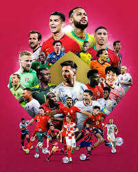
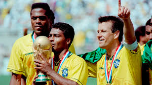
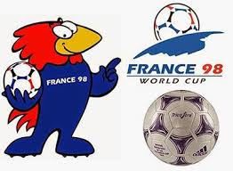
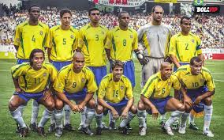
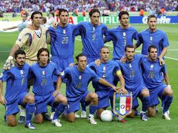
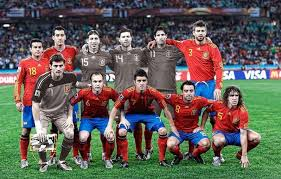

El mundial de 1994 se celebro en Estados Unidos y marcó un momento importante paea la expanción del fútbol en un país donde este deporte no era el más popular. El torneo contó con grande existencia en los estadios y una exelente organización. La selección de Brasil se consagró campeona por cuarta vez en su historia tras vencer a Italia en la final. El partido terminó 0-0 en el tiempo reglamentario y la prórroga, por lo que se decidió en tanda de penales, siendo esta la primera final mundialista definida de esta manera. Brasil destacó por su equilibrio entre defensa y ataque, con figuras como Romário y Bebeto, quienes fueron claves durante todo el torneo.

El Mundial de 1998 se realizó en Francia y fue un torneo histórico porque por primera vez participaron 32 selecciones, aumentando la competitividad. La selección anfitriona logró su primer título mundial al derrotar 3-0 a Brasil en la final. Zinedine Zidane fue la gran figura del partido decisivo, anotando dos goles de cabeza. Francia mostró un equipo sólido en defensa y efectivo en ataque, lo que le permitió dominar el torneo. Este Mundial también fue recordado por la gran organización y por consolidar a Francia como una potencia futbolística a nivel internacional.

El Mundial de 2002 fue organizado conjuntamente por Corea del Sur y Japón, siendo el primero en celebrarse en Asia y en dos países al mismo tiempo. La selección de Brasil obtuvo su quinto título, convirtiéndose en la más ganadora de la historia. En la final derrotó a Alemania con una destacada actuación de Ronaldo Nazário, quien anotó los dos goles del partido y terminó como máximo goleador del torneo. Brasil mostró un juego ofensivo espectacular y contó con grandes figuras como Ronaldinho y Rivaldo, formando un equipo muy recordado por su calidad y talento.

El Mundial de 2006 se llevó a cabo en Alemania y tuvo como campeón a Italia, que ganó su cuarto título mundial. La final contra Francia fue muy intensa y terminó empatada 1-1, por lo que se definió en penales. Este partido es recordado por el incidente en el que Zinedine Zidane fue expulsado tras un cabezazo a un rival en lo que fue su último partido como profesional. Italia se destacó por su sólida defensa y su gran disciplina táctica durante todo el torneo.

El Mundial de 2010 se celebró en Sudáfrica, siendo el primero organizado en el continente africano. La selección de España ganó su primer título mundial tras vencer a Países Bajos en la final con un gol de Andrés Iniesta en tiempo extra. España se caracterizó por su estilo de juego basado en la posesión del balón, conocido como “tiki-taka”, y por su gran control del partido. Este equipo es considerado uno de los mejores de la historia por su forma de jugar y su dominio en esa época.
